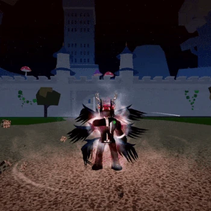

Roblox has thousands of interesting games, but one of the most popular is the "Blox fruits" mode. And today I will tell you about this amazing and thoughtful mode.
Blox Fruits is a popular online multiplayer game
on the Roblox platform. It is an action-adventure
game inspired by the One Piece anime and manga
series. In Blox Fruits, players can explore a vast
open world, battle against enemies and other players,
complete quests, and discover powerful fruits that
grant unique abilities.

The main gameplay revolves around finding and
consuming Devil Fruits, which grant players
various powers such as elemental manipulation,
enhanced physical abilities, or special attacks.
Each Devil Fruit has its own strengths and
weaknesses, encouraging players to strategize
and experiment with different abilities.
In the game Blox Fruits on Roblox, Devil Fruits are a central feature and play a
crucial role in shaping a player's abilities and playstyle. Devil Fruits are mystical fruits that, when
consumed, grant the user unique and powerful abilities. These abilities can range from elemental
control to physical enhancements and can vary greatly depending on the type of Devil Fruit consumed.
In the game "Blox Fruits," PvP stands for
Player versus Player. It refers to the gameplay
mode where players can engage in combat with
each other. PvP allows players to test their
skills, abilities, and strategies against other
players in battles or duels within the game.
It adds an element of competition and
interaction between players, creating a more
dynamic and immersive gaming experience.
In "Blox Fruits," gamepasses are additional features or perks that players
can purchase within the game using Robux, which is the in-game currency.
Gamepasses offer various advantages and enhancements to the gameplay experience.
In Blox fruits, there are 4 very valuable and rare weapons that are hard to get:
1.True Triple Katana
1)Find and locate the Legendary Sword Dealer
in Second Sea and purchase each of the three
Legendary Katanas sold by the Legendary Sword
Dealer, Saddi, Shisui, and Wando. Take into
account that each sword costs exactly
$2,000,000. So it needs $6,000,000 in
total to buy all three swords.
2)Obtain 300 Mastery on each of the three swords.
3)Travel to Green Zone proceed to locate the
highest "stem" and travel to the very top
of it to find the Mysterious Man, where
you're capable of purchasing the True Triple
Katana for $2,000,000. Once equipped,
the player will be awarded with 2 Titles,
“The Hurricane,” and “Demon Eye.”
4)The cost of each sword combined, including the
True Triple Katana will cost exactly $8,000,000.
2. Hallow Scythe
The Hallow Scythe has a 5% chance of
dropping after defeating the level
2100 Raid Boss, Soul Reaper. The
boss can be summoned by using a
Hallow Essence, on the blue fire
shrine, near the graveyard.
Hallow Essence can be obtained in two ways.
Praying at the Gravestone NPC
at the Haunted Castle. Getting
it from the Death King via
Random Surprise. (2.5% chance)
3. Cursed Dual Katana
The Cursed Dual Katana is one of
the four Mythical swords added in
Update 17.3. These swords are dual
wielded, the follow-up from Yama and
Tushita. It is one of the highest
damaging swords in the game. This
sword can be one of the best, if not
the best sword for PVP if used correctly,
and is also an excellent sword for
grinding due to its fast M1s with no
swing dash. The player must have
350 mastery on both Yama and Tushita
Complete the Cursed Dual Katana Puzzle.
To begin the puzzle, the player must
be level 2200 or above.
4. Dark Blade
The Dark Blade is one of the four
Mythical Swords, added in Update 1.
The first sword that allows the user
to "hold down" the move key for a
split second to change the moves
mechanics/range. (~0.15s for Z move,
~0.3s for X move) Dark Blade requires
a certain playstyle, where the user
takes advantage of their opponent's
mistakes. This may occur when the
opponent uses a move that will stun
themselves, and the user reacts
and hits quickly.

Races
Races are a core mechanic of Blox Fruits. Depending on the race of the player, they
will get unique passives and buffs to use in combat. In Blox Fruits, a race is randomly generated
upon the player joining for the first time, the obtainable races upon joining for the first time are:
Human (62.5%)
Shark (12.5%)
Angel (12.5%)
Rabbit (12.5%)
Unique Races:
Cyborg (Can be obtained through completing the Cyborg Puzzle.)
Ghoul (Can be bought for 100 Ectoplasm and a Hellfire torch through Experimic.)
HUMAN RACE
The Human race is one of
the four races that players
can spawn with on joining
the game for the first time.
It has a 50% chance to be
granted, making it the most
common race when you first
join.
SHARK RACE
The Shark race is one of
the four races that players
can spawn with on joining
the game for the first time.
It has a 12.5% chance to be
granted when you first join.
MINK RACE
The Mink (Rabbit) race is
one of the four races that
players can spawn with upon
joining the game for the
first time. It has a 12.5%
chance to be granted upon
first join. It is a highly
used race, as it grants a
good speed boost, and is
effective in traveling,
PvP at escaping combos,
chasing people, and run-
ning.
ANGEL RACE
The Angel race is one of
the four races that players
can spawn with upon joining
the game for the first time.
It has a 12.5% chance to be
granted upon first join.
GHOUL RACE
The Ghoul race is one of
two races that can be
obtained through a quest.
It was added in Update 12,
and can be obtained from
the Experimic NPC.
CYBORG RACE
The Cyborg race is one of
two races that can be
obtained through a quest.
It was added in Update 14,
its V3 ability was changed
in Update 17, and can be
obtained through completion
of the Cyborg Puzzle.
Bounty Hunt
Bounty/Honor can be earned by killing basic enemy NPCs, capping out
at 2,500,000. Players cannot gain bounty from basic enemy NPCs when
they already have more than 2,500,000 Bounty/Honor. If a player dies
from an NPC, they will lose Bounty/Honor equivalent to the NPC's level.
-5,000,000 bounty - "BEWARE! (player's name) has joined the server!"
-15,000,000 bounty - "A GOD HAS ARRIVED! (player's name) has joined the server!"